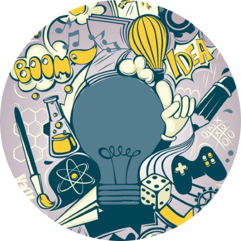

| Homepage | Contact Me | My Hobbies | Troubleshooting Tools |
|---|
|  |
Few of my Hobbies Here is a little about Myself In my free time, I like to play some videos games. From Xbox to mobile gaming or Pc gaming. I like to play all kinds of games like shooters, zombies, MMORPG, single-player, sandbox, and more. When I don`t feel lazy or have time I like to bodybuild for a few months and then take a break from it. Yeah, I know the whole point is to keep going and be healthy lol, but hey sometimes playing loud music and focusing on the weights can help with your health also. Now the binge-watching part... who does not like to sit down for a while and watch a good movie or show for a few hours or episodes I know I do. After having a long week of work I like to make food or eat snacks and watch my favorite shows or movies by myself or with my other half. If you click the hyperlinks below there are a few YouTube videos of what I like to watch or what type of gaming equipment I prefer. If you ever want to talk about weight lifting or want to through down on a gaming session just click the Contact Me link above and send me a message. |